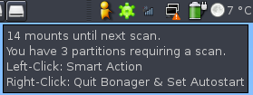

Bonager
Dieser Artikel wurde für die folgenden Ubuntu-Versionen getestet:
Dieser Artikel ist mit keiner aktuell unterstützten Ubuntu-Version getestet! Bitte diesen Artikel testen und das getestet-Tag entsprechend anpassen.
Zum Verständnis dieses Artikels sind folgende Seiten hilfreich:
Bonager  ist ein einfaches Werkzeug, um den oft ungewünschten Dateisystemcheck beim Systemstart zu verschieben. Im Unterschied zur Anleitung unter Dateisystemcheck erhält man von Bonager lediglich im voraus die Information, wann die nächste Überprüfung ansteht und kann diese entsprechend verschieben oder vorziehen. Dafür ist die Verwendung sicherer, was sie auch für Nicht-Experten empfehlenswert macht.
ist ein einfaches Werkzeug, um den oft ungewünschten Dateisystemcheck beim Systemstart zu verschieben. Im Unterschied zur Anleitung unter Dateisystemcheck erhält man von Bonager lediglich im voraus die Information, wann die nächste Überprüfung ansteht und kann diese entsprechend verschieben oder vorziehen. Dafür ist die Verwendung sicherer, was sie auch für Nicht-Experten empfehlenswert macht.
Hinweis:
 gedacht, andere Dateisysteme wie z.B.
gedacht, andere Dateisysteme wie z.B. Installation¶
Bonager ist primär zur Verwendung mit GNOME gedacht, funktioniert aber auch unter anderen Umgebungen wie Xfce oder IceWM, jedoch nicht unter KDE. Die Installation [1] erfolgt über ein deb-Paket, das von der Foren-Webseite unter Download heruntergeladen werden kann (Momentan erfordert dieser Download aber die Registrierung im englischen Forum) oder alternativ über diese Webseite .
Hinweis!
Fremdpakete können das System gefährden.

Benutzung¶
Nach der erfolgreichen Installation kann das Bonager über das Menü
"Anwendungen -> Zubehör -> Bonager Boot Scan Manager"
gestartet werden. Daraufhin erscheint im GNOME-Benachrichtigungsfeld ein neues Symbol. Bewegt man die Maus auf dieses Symbol, so wird im Tooltip angezeigt, wann die nächste Überprüfung erfolgen wird:
Automatischer Start¶
Mit einem Klick der rechten Maustaste auf das Symbol wird Bonager beendet. Bei der zunächst angezeigten Sicherheitsabfrage, ob man wirklich beenden möchte, kann man einstellen, dass Bonager beim Start des Rechners automatisch gestartet wird.
Überprüfung erzwingen¶
Mit einem Klick der linken Maustaste auf das Symbol kann man eine Festplatten-Überprüfung beim nächsten Start des Rechners erzwingen.
- Erstellt mit Inyoka
-
 2004 – 2017 ubuntuusers.de • Einige Rechte vorbehalten
2004 – 2017 ubuntuusers.de • Einige Rechte vorbehalten
Lizenz • Kontakt • Datenschutz • Impressum • Serverstatus -
Serverhousing gespendet von